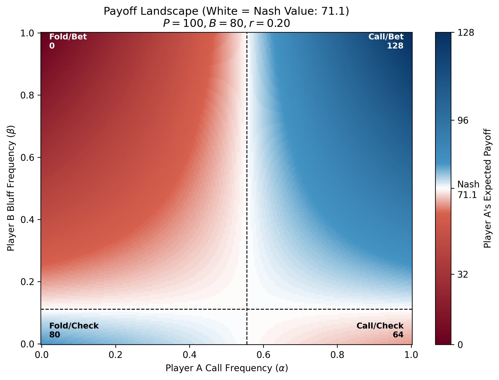

來延續上一篇的設定，假設 A 跟 B 玩 Seven-card stud， \(40-80\) 元有限注，池底有 \(P = 100\) 元。
現在來到最後一輪 River 下注(已經發了最後一張牌)，前六張都是開的，最後一張只有自己知道。
- A 的手牌是: A♠ A♣ K♣ 9♦ 7♦ 6♥ [?]
- B 的手牌是: K♠ 9♠ 8♠ 7♠ 4♦ 2♦ [?]
Player A 先手應該要 pass。
輪到 Player B:
- 若有 Nuts (湊成黑桃同花) 就一下會下注；
- 若是 Air 則要用 \(\beta\) 的機率決定是否詐唬 (下注 \(B = 80\) 元)。
上一篇用了完整的機率算法，解出 \(\displaystyle \beta = \frac{rB}{(1-r)(B+P)}\) 是 Player B 的最佳防禦策略，其中 \(r=1/5\) 是 Player B 拿到 Nuts 的機率 (從 Player A 的視角來看)。
而當 Player B bet時，Player A 的最佳回應策略是以 \(\displaystyle \alpha = \frac{P}{B+P}\) 的機率去跟注。
今天來用另一種方式，本質上是一樣，但是可能省去了複雜的期望值計算，並且提供了更直觀的心智模型。
翹翹板 Payoff
我們說要考慮 Player A 對於 Player B 的下注時的回應，要以 \(\alpha\) 的機率來決定是否跟注 (call \(C = 80\) 元)。
這邊兩個機率 \(\alpha\) 跟 \(\beta\)，若直接硬算，那就會是跟上一篇一樣。但是其實只要算 \(\alpha = {0, 1}\), \(\beta = {0, 1}\) 四種極端情況即可，因為剩下的情況會是這兩種的 mixed strategy。
若 Player B 拿到 Nuts，則 B 一定會 bet。在兩種極端狀況下，Player A 的期望值 payoff：
Player A: Always Fold
(\(\alpha = 0\))Player A: Always Call
(\(\alpha = 1\))Player B: Always Bet \(0\) \(-B\) 若 Player B 拿到 Air。在四種極端狀況下，Player A 的期望值 payoff：
Player A: Always Fold
(\(\alpha = 0\))Player A: Always Call
(\(\alpha = 1\))Player B: Always Bet (\(\beta = 1\)) \(0\) \(B + P\) Player B: Always Check (\(\beta = 0\)) \(P\) \(P\)
我們將以上三種情況，分別畫下來：
- Senario 1: Player B 拿到 Nuts，則 Player B 一定下注 (value bet)
- Senario 2: Player B 拿到 Air，假設 Player B 總是下注 (bluff bet)
- Senario 3: Player B 拿到 Air，假設 Player B 總是過牌 (honest check)
那麼對 Player A 來說，這三種情況的 payoff 分別是：

因為 Player A 要最大化 payoff，所以會選數值大的 (翹翹板高處)。
先讓我們暫時把這三個翹翹板記在心中，待會再回來看。
雙曲面
假設 Player B 拿到 Nuts 的機率是 \(r\) (此處 \(r=1/5\))，那麼一個 average over Player B 手牌的 Player A payoff 表格，即是兩個表的加權平均：
| Player A: Always Fold (\(\alpha = 0\)) |
Player A: Always Call (\(\alpha = 1\)) |
|
|---|---|---|
| Player B: Always Bet (\(\beta = 1\)) | \(0\) | \(-rB + (1-r)(B+P)\) |
| Player B: Always Check (\(\beta = 0\)) | \((1-r)P\) | \(-rB + (1-r)P\) |
先來簡化一下符號，將上面的 payoff 寫成矩陣 \(X = [X_{\beta \alpha}]\)：
| \(\alpha = 0\) | \(\alpha = 1\) | |
|---|---|---|
| \(\beta = 1\) | \(X_{10}\) | \(X_{11}\) |
| \(\beta = 0\) | \(X_{00}\) | \(X_{01}\) |
在這個例子中是 \[ \begin{align} X_{10} & = 0 \\ X_{11} & = -rB + (1-r)(B+P) \\ X_{00} & = (1-r)P \\ X_{01} & = -rB + (1-r)P \end{align} \]
既然已經知道 Pure Strategy 的 所有可能 情況，那麼 mix strategy 就是這些情況的 convex linear combination，而 \(\alpha, \beta \in [0, 1]\) 就是權重。
所以在 mix strategy 時， Player A 的 payoff 期望值就是： \[ \begin{align} \mathbb{E}[\text{Payoff}_A] & = \alpha \beta X_{11} + \alpha (1-\beta) X_{01} + (1-\alpha) \beta X_{10} + (1-\alpha)(1-\beta) X_{00} \tag{1}\label{eq:hyperbolic_payoff} \\ \end{align} \]
將 \(\mathbb{E}[\text{Payoff}_A]\) 視為一個 \(\alpha, \beta\) 的函數，畫在三維空間中的話，就是一個雙曲面 (hyperbolic surface)：

這是一個標準的雙曲面 (hyperbolic paraboloid)，中間有個鞍點 (saddle point)。
雖然是個二次函數，但當固定其中一個變數 (例如 \(\beta\))，截面其實是一條直線。可以將雙曲面想成是一條直線一邊旋轉一邊平移所掃出來的曲面。
當我們看 Side View 時 (相 \(\beta\) 這個維度投影掉)，可以明顯看出這個直線掃出的感覺，這不就是剛剛的翹翹板? 沒錯，這個雙曲面其實就是把三個翹翹板「合體」起來的結果。
讓我們 zoom in 看一下這個投影在 \(\alpha\)-\(\beta\) 平面圖，其實也就是把 payoff 畫成 heatmap：

這張圖 Figure 3 很視覺化了驗證了之前推導的結果:
- 當 \(\alpha = \alpha^* = \frac{P}{B+P}\) 時， 不管 Player B 選擇哪個，期望值都是一樣的 (白色區域)。
- 而當 \(\beta = \beta^* = \frac{rB}{(1-r)(B+P)}\) 時， 不管 Player A 選擇哪個，期望值也是一樣的 (白色區域)。
- 而當其中有人偏離平衡點時，另一人可以取 0 或 1 的極端策略來懲罰對方 (payoff 變成紅色或藍色)。
一般式
現在幾何直覺已經很清楚了，讓我們回到一般式 \(\eqref{eq:hyperbolic_payoff}\)，來算一下公式解。
首先，這個鞍點會在 \(\alpha, \beta \in (0, 1)\) 內部出現的充要條件是： \[ \begin{align} (X_{00} - X_{01})(X_{10} - X_{11}) & < 0 \\ (X_{00} - X_{10})(X_{01} - X_{11}) & < 0 \end{align} \] 也就是在端點時，兩條斜率相乘是負的。
而在此時，鞍點的位置 \((\alpha^*, \beta^*)\) 是： \[ \begin{align} \alpha^* & = \frac{X_{00} - X_{10}}{X_{00} - X_{01} - X_{10} + X_{11}} \\ \beta^* & = \frac{X_{00} - X_{01}}{X_{00} - X_{10} - X_{01} + X_{11}} \end{align} \] 這可以有很多種解法，其中一種直覺 (圖解法) 是讓 \[ \alpha : (1 - \alpha) = X_{00} - X_{10} : X_{11} - X_{01} \]
而這個鞍點的 payoff ，也就是這個 game 的 value 是： \[ \mathbb{E}[\text{Payoff}_A]^* = \frac{X_{00} X_{11} - X_{01} X_{10}}{X_{00} - X_{01} - X_{10} + X_{11}} \]
這當然也有很多種解法，例如直接把 \(\alpha^*, \beta^*\) 帶回去。但另外一個有趣的算法是，若同時扣掉 \(h\) 將這個鞍點的高度(垂直平移到0)的話，那雙曲面函數 兩組對角線項 相乘會相等: \[
(X_{00} - h)(X_{11} - h) = (X_{01} - h)(X_{10} - h)
\]
這樣自動就解出鞍點的高度 \(h\) 了。
講回翹翹板
我們再次回到翹翹板的圖像，原本翹翹板中間的桿子是沒有實質意義的，但現在剛好可以想成是線性的插值。
| Senario 1 | Senario 2 | Senario 3 | |
|---|---|---|---|
| 直觀解釋 | Value Bet | Bluff Bet | Honest Check |
| 發生的機率 | \(r\) | \((1-r)\beta\) | \((1-r)(1-\beta)\) |
| 翹翹板 | \(0:-B\) | \(0:(B+P)\) | \(P:P\) |
而 Player B 的最佳策略，就是使得 Player A 感受到翹翹板是平衡的 (這就是無差異原則!)，也就是用機率加權後是平衡的。
於是我們再次推導出 bluff-to-value ratio: \[ \frac{\mathbb{P}[\text{bluff}]}{\mathbb{P}[\text{value}]} = \frac{(1-r)\beta}{r} = \frac{B}{B+P} \] 因為第三種狀況是 balanced，所以不用考慮。